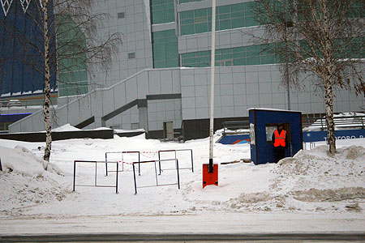

Слухи о том, что посещение ТРЦ "Лапландия" в Кемерово может быть опасно для здоровья, при строительстве были допущены значительные нарушения, продавцы боятся ходить на работу и вообще в витрине стекло треснуло ходили почти с самого открытия комплекса. Никто из официальных лиц слухи не подтверждал и не опровергал.

И вот 3 января, как раз в то время когда люди доели и допили праздничные запасы и должны бы при наличии выходных заняться шоппингом ТРЦ "Лапландия" был закрыт.
Официальная версия выглядит так:
Уважаемые посетители торгового комплекса! Поздравляем с Новым Годом и Рождеством! Желаем счастья и благополучия! В связи с проведением работ по обеспечению бесперебойного энергоснабжения комплекса (заменой высоковольтного кабеля и пусконаладочными работами) с 03 января ТРЦ "Лапландия" временно не работает. Приносим свои извинения за причиненные неудобства. С уважением, администрация ТРК "Лапландия"
Во-первых не очень верится, что при проектировании такого комплекса могли так лажанутся с кабелем, а во вторых почему не объявлена дата окончания работ?